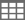

<div class="clearfix" *ngIf="selectedTab?.toLowerCase() !== 'backlog'">
<div class="filter-nav">

    <div class="selected-filter-row p-d-flex p-jc-between" *ngIf="selectedTab?.toLowerCase() !== 'iteration'">
       <ul class="p-m-0 p-pl-0 p-d-flex flex-wrap">
          <!-- *ngIf="!kanban"-->
          <ng-container *ngFor="let item of selectedFilterArray; let i = index;">
             <li class="selectedfilter p-mr-5">
                <div class="selected-node">
                   <div class="selected-node-label"><span class="align-list-marker"></span>{{item?.nodeName?.length
                      <= 50 ? item?.nodeName : item?.nodeName?.slice(0,50)+'...'}} <!-- <span
                         *ngIf="router.url !== '/dashboard/Maturity'">
                         ( {{ item.grossMaturity }} )
                         </span> -->
                         <span class="remove-node p-l-1" (click)="removeNode(item.nodeId)"
                            *ngIf="selectedFilterArray.length > 1">x</span>
                   </div>
                   <div class="p-d-flex p-ml-2" *ngIf="item?.additionalFilters?.length > 0">
                      <div class="p-d-flex p-align-center" (mouseover)="showDropdown[item?.nodeId] = true"
                         (mouseleave)="showDropdown[item?.nodeId] = false">
                         
                         <span class="text-underline">{{item?.additionalFilters?.length + " Filters Selected"}}</span>
                         <div class="itemsDropdown border p-p-2" *ngIf="showDropdown[item?.nodeId]"
                            (mouseleave)="showDropdown[item?.nodeId] = false">
                            <div *ngFor="let key of item?.additionalFilters" class="p-d-flex p-align-center">
                               
                               
                               <div class="nodeName p-mr-2">{{key?.nodeName}}</div>
                               <div class="btn-remove" (click)="removeItem(key?.labelName, key?.nodeId)">x</div>
                            </div>
                         </div>
                      </div>
                   </div>
                </div>
             </li>
          </ng-container>
       </ul>

    <!-- toggle view and show/hide-->
    <div class="tabs" *ngIf="selectedTab?.toLowerCase() !== 'maturity'">
        <input id="chart-view" class="chart-view" type="radio" name="view" [checked]='showChart'>
        <label class="label1" for="chart-view" (click)="showChartToggle(true)" id="Layout-Chart">
            
            
        </label>
        <input id="table-view" class="table-view" type="radio" name="view" [checked]='!showChart'>
        <label class="label2" for="table-view" (click)="showChartToggle(false)" id="Layout-Table">
            
            
        </label>
        <div class="position-relative p-ml-2" *ngIf="selectedTab?.toLowerCase() !== 'maturity'"
         [ngClass]="noAccessMsg ? 'hide-filter':'show-filter'">
         <div class="btn-custom p-d-flex p-align-center p-text-uppercase p-p-2 rounded filter-dropdown filter-btn p-mr-2"
            #toggleButton [ngClass]="{'active': toggleDropdown}" (click)="toggleDropdown = !toggleDropdown">
            Show/Hide
         </div>
         <div *ngIf="toggleDropdown && showKpisList && showKpisList?.length > 0" class="position-absolute kpi-dropdown"
            #drpmenu>
            <form [formGroup]="kpiForm" (ngSubmit)="submitKpiConfigChange()">

               <div class="p-d-flex p-align-center p-p-3 border-bottom">
                  <p-inputSwitch formControlName="enableAllKpis" (onChange)="handleAllKpiChange($event)">All KPI's
                  </p-inputSwitch>
                  <span class="p-ml-2">All KPI's</span>
               </div>
               <ul formGroupName="kpis" class="kpiList p-pl-3 p-pr-3 p-mb-0 p-pb-3">
                  <li *ngFor="let kpi of this.showKpisList" class="p-d-flex p-align-center p-p-2 border rounded p-mt-3">
                     <p-inputSwitch [formControlName]="kpi.kpiId" (onChange)="handleKpiChange($event)">
                     </p-inputSwitch>
                     <span class="p-ml-2">{{kpi.kpiName}}</span>
                  </li>
               </ul>
               <div class="p-p-3 border-top p-text-right">
                  <button pButton pRipple label="Cancel" icon="pi pi-times"
                     class="p-button-secondary p-button-text p-mr-2 p-button-sm"
                     (click)="toggleDropdown = false"></button>

                  <button type="submit" pButton pRipple class="p-button-sm p-button-success p-button-raised"
                     icon="pi pi-check" iconPos="left" label="Save"></button>
               </div>

            </form>
         </div>
      </div>
    </div>
    <div class="selected-filter-row p-d-flex p-jc-between" *ngIf="selectedTab?.toLowerCase() === 'iteration'">
    <!--start date and end date-->
    <div class="p-d-flex p-ml-3 p-align-end" *ngIf="selectedTab?.toLowerCase() !== 'backlog'">
       <span class="p-mr-5">
          <h4 class="label-text p-mt-0 p-mb-2">Start Date</h4>
          <p class="p-m-0 selected-data"
             [ngClass]="{'active-state': selectedFilterArray[0]?.sprintState?.toLowerCase() === 'active'}">
             {{getDate('start')}}</p>
       </span>
       <span class="p-mr-5">
          <h4 class="label-text p-mt-0 p-mb-2">End Date</h4>
          <p class="p-m-0 selected-data"
             [ngClass]="{'active-state': selectedFilterArray[0]?.sprintState?.toLowerCase() === 'active'}">
             {{getDate('end')}}</p>
       </span>
       <span class="p-mr-5" *ngIf="iterationConfigData?.daysLeft != undefined">
          <h4 class="label-text p-mt-0 p-mb-2">Days Left</h4>
          <p class="p-m-0 text-red">
             {{iterationConfigData?.daysLeft > 0 ? iterationConfigData?.daysLeft : 0}} Days</p>
       </span>
       <span class="p-mr-5" *ngIf="iterationConfigData?.capacity != undefined">
          <h4 class="label-text p-mt-0 p-mb-2">Capacity <span class="fa fa-info-circle"
             aria-hidden="true" (mouseover)="showTooltip(true)" (mouseleave)="showTooltip(false)">
             <app-tooltip *ngIf="isTooltip" [data]="iterationConfigData?.capacity?.kpiInfo"
             ></app-tooltip>
          </span></h4>
          <p class="p-m-0 text-blue">
             {{iterationConfigData.capacity?.value?.value ? iterationConfigData.capacity?.value?.value + ' Hours'  : 'NA'}}</p>
       </span>
    </div>
    <button pButton pRipple type="button" [disabled]="kpisNewOrder?.length === 0" [ngClass]="{'p-button-outlined' : kpisNewOrder?.length === 0 }" label="SAVE DASHBOARD VIEW" class="p-button-secondary" (click)="setKPIOrder()"></button>
    </div>
    
 </div>
</div>